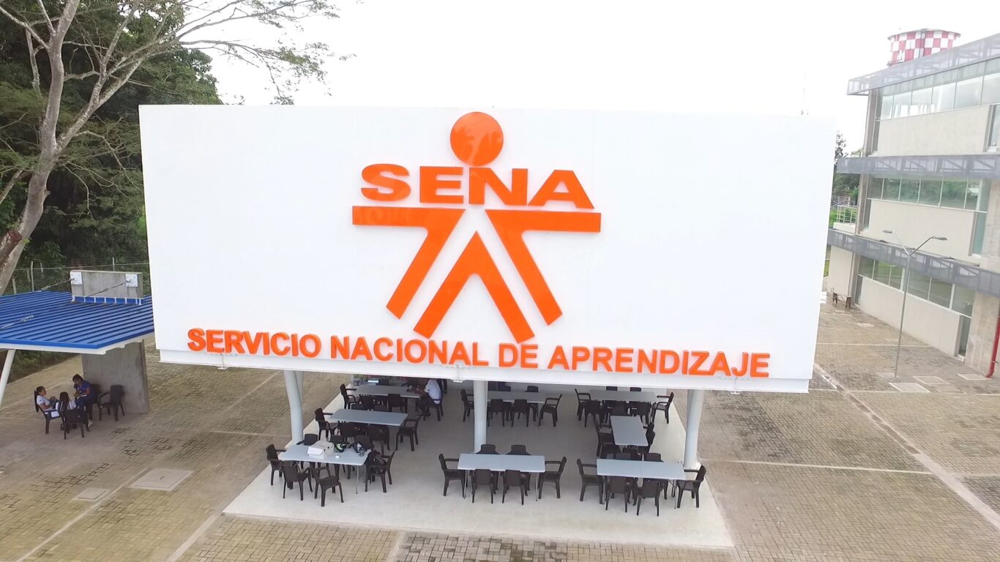
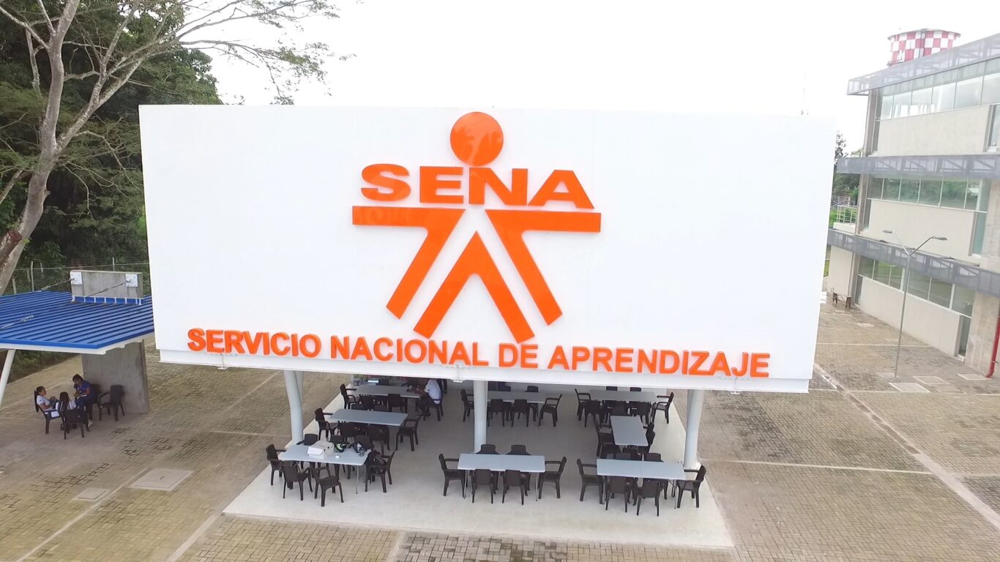

SENA INDUCCIÓN
INDUCCIÓN TECNÓLOGO ADSO
Primero se tiene que explicar que significan las siglas A.D.S.O, que son la abreviación de tecnólogo en Análisis y Desarrollo de Software.
La inducción se dio por 2 semanas en las cuales se presentaron el recorrido por las instalaciones y diversas actividades en formato de
Word a realizar, las cuales consistían en que los aprendices entendieran en que es lo que están cursando y si de verdad quieren seguir
en ese tecnólogo, a la vez que se evaluaban los conocimientos previos en relación a ADSO (Ejm: ficha del programa) y sobre las instalaciones, funciones, aplicaciones y símbolos del SENA, junto con las diversas áreas y respectivos servicios ofrecidos.

 

También se realizó actividades en torno al trabajo en equipo y rapidez mental las cuales eran realizadas mayormente por un grupo de los aprendices de talento humano, las cuales consistían en trabajar entre todos los integrantes del grupo de tal manera que todos aportaran algo a las actividades planteadas, las cuales tenían una parte didáctica y otra que era el responder preguntas por medio de Microsoft Word.